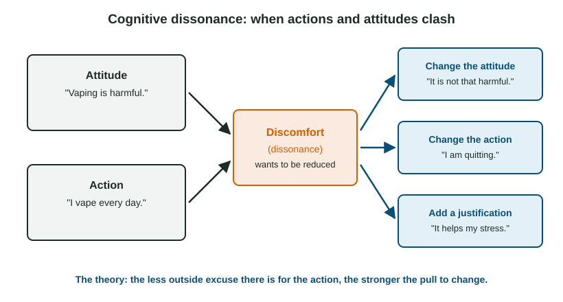

Attitude Formation and Attitude Change
Attitudes combine feelings and beliefs about people and things.
Part 1 · Hook
Why this matters
Part 2 · Before you start
What this builds on
Part 3 · Prerequisite check
Quick check before you start
1. Which is an example of the fundamental attribution error?
- Deciding a waiter is rude without considering that he is overworked
- Taking credit for your own success
- Liking a song more after hearing it often
- Comparing yourself with someone worse off
Show the answer
Explaining another person's behavior by disposition and overlooking the situation is the fundamental attribution error.
- Correct: Deciding a waiter is rude without considering that he is overworked:
- Taking credit for your own success:
- Liking a song more after hearing it often:
- Comparing yourself with someone worse off:
2. What is working memory?
- The small, active space where information is held and worked on right now
- Permanent storage of everything you know
- Memory for skills such as riding a bike
- Memory for events from early childhood
Show the answer
Working memory holds and manipulates a limited amount of information at once, which is why heavy mental load leaves less room for careful thinking.
- Correct: The small, active space where information is held and worked on right now:
- Permanent storage of everything you know:
- Memory for skills such as riding a bike:
- Memory for events from early childhood:
Part 4 · See it
See it first

Part 5 · Step by step
How it works, step by step
- People sort others into groups and hold stereotypes about themstereotypes can feed prejudice, especially under cognitive load
- People favor their own group and see other groups as all alikein-group bias and out-group homogeneity keep prejudice going
- People seek evidence that fits what they believe and hold on when it is challengedconfirmation bias and belief perseverance make attitudes resist change
- A person freely acts against an attitude with little outside reasoncognitive dissonance can push the attitude to shift toward the action
Part 6 · Key ideas
Key ideas
- A stereotype is a generalized belief about a group; prejudice is an unjustified, usually negative attitude toward a group. Under cognitive load, people lean on stereotypes more.
- Implicit attitudes are automatic associations that can differ from what people say they believe. Reaction-time tests of them are useful for research but are unreliable for labeling one person.
- What sustains prejudice: the just-world phenomenon (victims are blamed), in-group bias, out-group homogeneity and ethnocentrism.
- Why attitudes resist change: confirmation bias and belief perseverance. What can change them: cognitive dissonance, when actions and attitudes clash.
Part 7 · Misconception
A common mistake
The wrong idea: People act on their attitudes, so to change behavior you must first change attitudes.
What actually happens: The arrow also runs the other way. When people freely act against an attitude, they often shift the attitude to fit the action (cognitive dissonance). Why exactly this happens is still debated, but the shift itself is well documented.
Part 8 · Check yourself
Check yourself
Exam-style questions. Anything you miss goes into your review queue.
1. Dev believes his school's rival is full of arrogant students. When he meets a friendly student from that school, he decides she is "an exception" and keeps his view. Which concept best explains his reaction?
- Belief perseverance
- Out-group homogeneity
- Cognitive dissonance
- Just-world phenomenon
Show the answer
Clinging to a belief after contrary evidence appears is belief perseverance.
- Correct: Belief perseverance: Right: he holds on to his belief even when he meets evidence against it.
- Out-group homogeneity: Out-group homogeneity is seeing the other group as all alike. His reaction to new evidence is the point here.
- Cognitive dissonance: Dissonance comes from a clash between one's own actions and attitudes, not from meeting someone new.
- Just-world phenomenon: The just-world phenomenon is believing people get what they deserve.
2. Before an election, Ana reads only news sites that support her candidate and remembers the stories that make the other candidate look bad. Which concept explains her behavior?
- Confirmation bias
- Mere exposure effect
- Out-group homogeneity
- Relative deprivation
Show the answer
Searching for and favoring information that supports existing beliefs is confirmation bias.
- Correct: Confirmation bias: Right: she seeks and remembers information that fits what she already believes.
- Mere exposure effect: Mere exposure is liking things more after repeated contact. Ana is choosing information that fits her views.
- Out-group homogeneity: Out-group homogeneity is seeing members of another group as all alike.
- Relative deprivation: Relative deprivation is feeling worse off than a comparison group.
3. Students are split into "red" and "blue" teams by a coin flip for a one-day game. Later, when asked to split prize money between two strangers, they give more to a stranger from their own color team. Which concept explains this?
- In-group bias
- Out-group homogeneity
- Self-serving bias
- Mere exposure effect
Show the answer
Even meaningless groups produce favoritism toward the in-group: in-group bias.
- Correct: In-group bias: Right: favoring members of one's own group, even a group formed by a coin flip.
- Out-group homogeneity: That is about seeing the other group as all alike, not about favoring your own.
- Self-serving bias: The self-serving bias concerns explaining one's own success and failure, not sharing money with others.
- Mere exposure effect: The students had no more contact with their own team's strangers than the other team's.
Study
Festinger and Carlsmith: paid to call a boring task fun
Introduction
Researchers tested cognitive dissonance theory: when people say something they do not believe and have little outside reason for doing so, they may change their attitude to match what they said.
Participants
71 male students in an introductory psychology course at Stanford University, who were required to take part in research for the course. Results are reported for 60 (20 per group); the rest were set aside for reasons such as suspecting the purpose of the study.
Method
Each student spent an hour on dull tasks: turning pegs and filling trays with spools. Each student was then placed in one of three groups (the paper does not say how). In two groups, the experimenter asked the student to tell the next participant (actually a confederate) that the tasks were enjoyable, and paid either $1 or $20 for doing so. A control group was not asked. Afterward, an interviewer asked each student how enjoyable the tasks had been, on a scale from -5 (extremely dull) to +5 (extremely enjoyable). At the end, the experimenter explained the true purpose of the study, and paid students were asked to return the money.
Results
Mean enjoyment ratings were -0.45 in the control group, +1.35 in the $1 group and -0.05 in the $20 group. The $1 group rated the tasks as more enjoyable than the control group and the $20 group.
Discussion
A 2024 replication in 39 labs (about 4,900 participants), using a related method in which students wrote an essay for a view they disagreed with, found people did shift their attitude after writing a statement they disagreed with, but not the key difference between people who felt free to choose and people who did not. How dissonance works remains debated.
4. According to dissonance theory, why did the $1 group rate the task as more enjoyable than the $20 group?
- $1 was too little to justify the lie, so they changed their attitude
- $1 was a stronger reinforcer than $20
- The $1 group had better tasks to do
- The $20 group was punished for lying
Show the answer
$20 was a good outside reason for lying, so no dissonance. $1 was not, so students reduced dissonance by believing the task was not so bad.
- Correct: $1 was too little to justify the lie, so they changed their attitude: Right: with little outside justification, the clash between belief and statement was reduced by liking the task more.
- $1 was a stronger reinforcer than $20: A larger reward is usually the stronger reinforcer. The point is the lack of justification.
- The $1 group had better tasks to do: All groups did the same dull tasks.
- The $20 group was punished for lying: Nobody was punished; both groups were paid.
5. The students were told the confederate was another participant. Which ethical safeguard does this deception make necessary?
- Debriefing, explaining the deception and its purpose afterward
- Random assignment to groups
- A larger sample of students
- Using a scale from -5 to +5
Show the answer
Deception is allowed only when needed and must be followed by debriefing.
- Correct: Debriefing, explaining the deception and its purpose afterward: Right: when deception is used, participants must be told the truth and why it was needed.
- Random assignment to groups: Random assignment is a design feature, not an ethical safeguard.
- A larger sample of students: Sample size is about precision, not ethics.
- Using a scale from -5 to +5: The rating scale is a measure, not a safeguard.
6. Which statement about generalizing these results is best supported by the participants' characteristics?
- They may not apply to women or non-students: the sample was male Stanford students
- They apply to everyone, since 71 people took part
- They apply to no one, since the tasks were dull
- They apply to people paid exactly $1 and no one else
Show the answer
All participants were male college students at one university in the 1950s, which limits generalization to other groups.
- Correct: They may not apply to women or non-students: the sample was male Stanford students: Right: generalizing is judged from who the participants were.
- They apply to everyone, since 71 people took part: Generalizing is judged by participant characteristics, not by the number of people.
- They apply to no one, since the tasks were dull: Dull tasks were the point of the method; they do not prevent generalization.
- They apply to people paid exactly $1 and no one else: The payment was the manipulated variable, not a participant characteristic.
Part 9 · Summary
Summary
Part 10 · Up next
What comes next
Part 11 · Connections